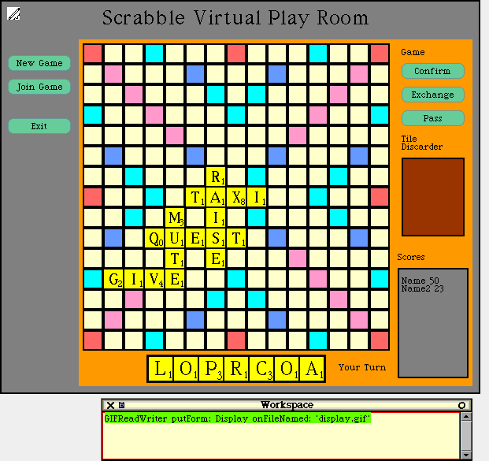

Morphic Sample
- The Scrabble Game
Morphic Sample
- The Scrabble Game
by Juan Manuel Vuletich
This is a Morphic Sample Application. It shows how a real Morphic application
can be built using the Classic style. Sometime, I plan to write a Morphic
tutorial on how the main morphs were made.

Description
This is a Scrabble game for several players. It was originally developed
as a laboratoy exercise for the Software Engineering course at the Buenos
Aires University. The machine will not play, but it controls the turns,
the words in the board, the scores, etc. It runs in Squeak. Each player
plays from his PC, and they must be connected via TCP/IP to a Server. So,
we have two different programs, the Client and the Server. The Server runs
inside a Transcript and has no GUI. The Client is Morphic.
The Morphs
If you are just interested in Morphic programming, download client.zip,
and file in all the .st files.
Now add a ScrabbleTileMorph and several ScrabbleBoardBoxMorphs. You
can resize the boxes to different sizes, and drag&drop the tile from
one to another, and see how the tile adapts to its owner.
Now add a ScrabbleBoardMorph, and enlarge it. You can also drop a tile
in its boxes. Resize it. The boxes and tiles resize themselves again.
Add another ScrabbleBoardMorph. Before expanding it, open an inspector
and evaluate self boardSize: 25@25
and self addScrabbleBoardBoxes. Now
expand it. This is how a 12 player board looks like.
Download
You can choose to use full dictionaries or a reduced version of them. The
full ones make the game much more enjoyable.
Server.zip (11 kBytes)
Client.zip (11 kBytes)
Dics.zip (1084 kBytes) or SmallDics.zip
(62 kBytes)
Installing
1- It is necessary to start (at least) 3 simultaneous Squeak sessions.
It can be done in 3 (or more) networked machines, or in the same machine.
Each session must come from a copy of Squeak in a different directory.
Call one of the sessions the Server, and the others Client1 to ClientN.
The machines need to have TCP/IP support.
2- Copy all the server files to its directory, and the client's to their
directories. Copy a set of dictionary files only to the server's directory.
In every session open a fileList, and fileIn all the *.st files in the
directory.
Playing
1- In the Server, open a Transcript (not a workspace) and do "ClientManager
current start". This will read the available dictionaries, and will start
ths Server. The Server stops clicking with the mouse.
2- In each Client, open a Morphic project, and do "New Morph..." "Scrabble"
"LoginMorph". This will open a Login window, where we must enter the IP
address the Server showed us in the Transcript, with a name and a password.
3- Once we get in the "Virtual playroom", one of the players must create
a game , choosing a language and a dictionary from the available ones.
Enter the number of players.
4- The other players can then enter the juste created game. When all
the necesary players are ready, the game starts.
5- To play, drop some letters in the board (the other players see each
letter you move, just like with a real board) and click on "Confirm". If
you prefer to change some of your letters, drop them in the "Tile Discarder"
and click on "Exchange". If you prefer to pass your turn to the next player,
click on "Pass".
6- The usual rules for Scrabble are used.
7- Have fun.